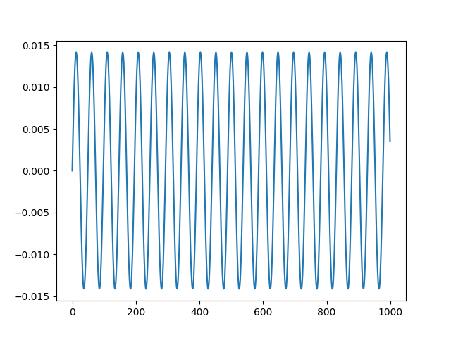

Note
Click here to download the full example code
Generate sample stimuli¶
This shows how to generate some simple stimuli. It will also play a couple of sample stimuli.
from os import path as op
import numpy as np
import matplotlib.pyplot as plt
from expyfun.io import write_hdf5, write_wav
from expyfun.stimuli import play_sound
print(__doc__)
def generate_stimuli(num_trials=10, num_freqs=4, stim_dur=0.5, min_freq=500.0,
max_freq=4000.0, fs=24414.0625, rms=0.01, output_dir='.',
save_as='hdf5', rand_seed=0):
"""Make some sine waves and save in various formats. Optimized for saving
as MAT files, but can also save directly as WAV files, or can return a
python dictionary with sinewave data as values.
Parameters
----------
num_trials : int
Number of trials you want in your experiment. Ignored if save_as is
not 'mat'.
num_freqs : int
Number of frequencies (equally-spaced on a log2-scale) at which to
generate tones.
stim_dur : float
Duration of the tones in seconds.
min_freq : float
Frequency of the lowest tone in Hertz.
max_freq : float
Frequency of the highest tone in Hertz.
fs : float | None
Sampling frequency of resulting sinewaves. Defaults to 24414.0625 (a
standard rate for TDTs).
rms : float
RMS amplitude to which all sinwaves will be scaled.
output_dir : str
Directory to output the files into.
save_as : str | None
Format in which to return the sinewaves. 'dict' returns sinewave arrays
as values in a python dictionary; 'wav' saves them as WAV files at
sampling frequency 'fs'; 'mat' saves them as a MAT file along with
related variables 'fs', 'freqs', 'trial_order', and 'rms'.
None will not save any data.
rand_seed : int | None
Seed for the random number generator.
Returns
-------
wavs : dict | None
The stimulus dictionary.
"""
if rand_seed is None:
rng = np.random.RandomState()
else:
rng = np.random.RandomState(rand_seed)
# check input arguments
if save_as is not None and save_as not in ['dict', 'wav', 'hdf5']:
raise ValueError('"save_as" must be "dict", "wav", or "hdf5"')
fs = float(fs)
t = np.arange(np.round(stim_dur * fs)) / fs
# frequencies equally spaced on a log-2 scale
freqs = min_freq * np.logspace(0, np.log2(max_freq / float(min_freq)),
num_freqs, endpoint=True, base=2)
# strings for the filenames / dictionary keys
freq_names = [str(int(f)) for f in freqs]
names = ['stim_%s_%s' % (n, f) for n, f in enumerate(freq_names)]
# generate sinewaves & RMS normalize
wavs = [np.sin(2 * np.pi * f * t) for f in freqs]
wavs = [rms / np.sqrt(np.mean(w ** 2)) * w for w in wavs]
# collect into dictionary & save
wav_dict = {n: w for (n, w) in zip(names, wavs)}
if save_as == 'hdf5':
num_reps = num_trials // num_freqs + 1
trials = np.tile(range(num_freqs), num_reps)
trial_order = rng.permutation(trials[0:num_trials])
wav_dict.update({'trial_order': trial_order, 'freqs': freqs, 'fs': fs,
'rms': rms})
write_hdf5(op.join(output_dir, 'equally_spaced_sinewaves.hdf5'),
wav_dict, overwrite=True)
elif save_as == 'wav':
for n in names:
write_wav(op.join(output_dir, n + '.wav'), wav_dict[n], int(fs))
return wav_dict
if __name__ == '__main__':
wav_dict = generate_stimuli(save_as=None)
plt.plot(wav_dict['stim_0_500'][:1000])
play_sound(wav_dict['stim_0_500'])
plt.show()
Total running time of the script: ( 0 minutes 0.287 seconds)